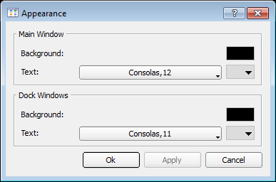
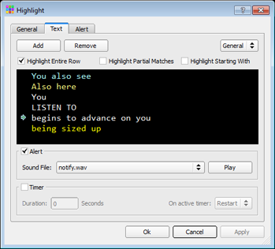
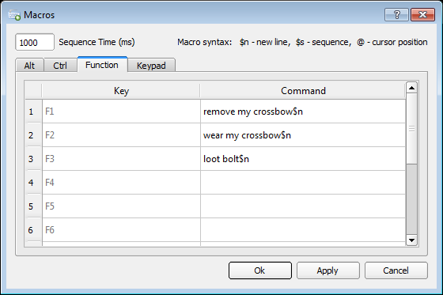
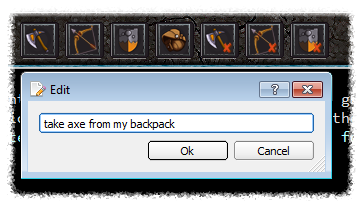

Frostbite
A MUD client for Dragonrealms
2.1 Client settings
The Frostbite frontend is still a work in progress and not all functions in the application can be configured. It is currently possible to customize appearance of the game windows, set user macros, filter highlighted text and set quick button actions.
Appearance dialog
Can be opened from the main menu. It enables to set text color, font and background color of game windows.

Highlight dialog
Can be opened from the main menu and it enables to set text color highlighting. The highlight dialog is split up into three subcategories.
- - General highlighting values are statically programmed into the game client and can only be changed in color;
- - Text highlighting allows dynamic entries and it also includes timer triggering settings;
- - Alerts tab provides the means to play sound alert on number of predetermined events.

Macros/Sequences
Macros allow users to bind game commands to specified key combinations. In addition to macros Frostbite frontend also supports key sequences, meaning that you can delay a predetermined amount of time between each command which makes it possible to enter 3 or more commands in a single sequence (game only supports 2 consecutive commands).
For example running a command sequence - "look$nlook$slook$n", will wait before executing the last command for a predetermined amount of time.

Quick button actions
Quick button actions can be changed by clicking the right mouse button on the quick button.
